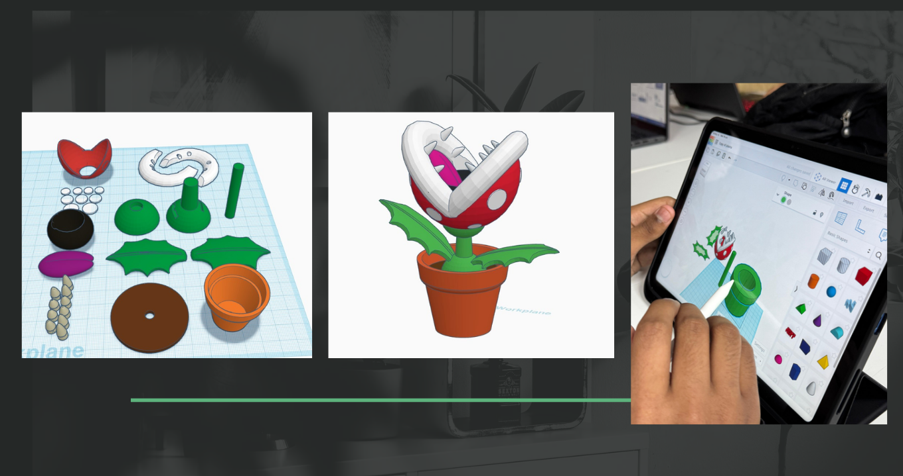

FINALIZACIÓN DEL DISEÑO Y PREPARACIÓN PARA LA IMPLEMENTACIÓN
En la octava semana, nos centramos en la finalización del diseño del sistema de riego automatizado y en la preparación para la implementación real del sistema. Este fue un paso crucial para asegurar que el diseño estuviera completamente optimizado para su uso en el mundo real. Tras realizar ajustes, refinamos tanto el hardware como el software para garantizar una integración perfecta entre todos los componentes.
Durante esta semana, también preparamos todos los materiales y componentes necesarios para la implementación. Esto incluyó la adquisición de sensores adicionales, la calibración precisa de los módulos y el ajuste de la frecuencia de riego para adaptarse mejor a diferentes tipos de plantas. Se realizaron pruebas finales en el prototipo para verificar que todo estuviera funcionando correctamente y sin fallos.
Ajustes Finales al Sistema
El sistema recibió algunos ajustes finales en el código, especialmente en lo que respecta a la integración de sensores de humedad con el módulo de control. Además, implementamos una nueva función que permite al usuario ajustar el tiempo de riego manualmente si se requiere más o menos agua para ciertas plantas. También se hizo una mejora en la precisión del sensor, lo que permite una lectura más confiable de la humedad del suelo.
Además, revisamos el consumo energético del sistema, asegurándonos de que fuera eficiente. Las mejoras implementadas permitirán que el sistema sea más sostenible, sin necesidad de recurrir a un gran consumo de energía ni de agua, alineándose con los principios de sostenibilidad que son fundamentales en este proyecto.
Próximos Pasos para la Implementación
Con el diseño finalizado, el siguiente paso es preparar el prototipo para su implementación real. Esto incluirá la instalación de los sistemas en varios hogares de prueba, donde se monitorearán los resultados a largo plazo. También planeamos recibir más comentarios de los usuarios para asegurarnos de que el sistema se ajuste a sus necesidades y se realicen posibles mejoras.
En resumen, la Semana 8 fue clave para cerrar el ciclo de diseño y comenzar con la fase de implementación real. Todos los elementos están listos para llevar el sistema de riego automatizado a la vida real, brindando a los usuarios una herramienta eficiente y fácil de usar para el cuidado de sus plantas.